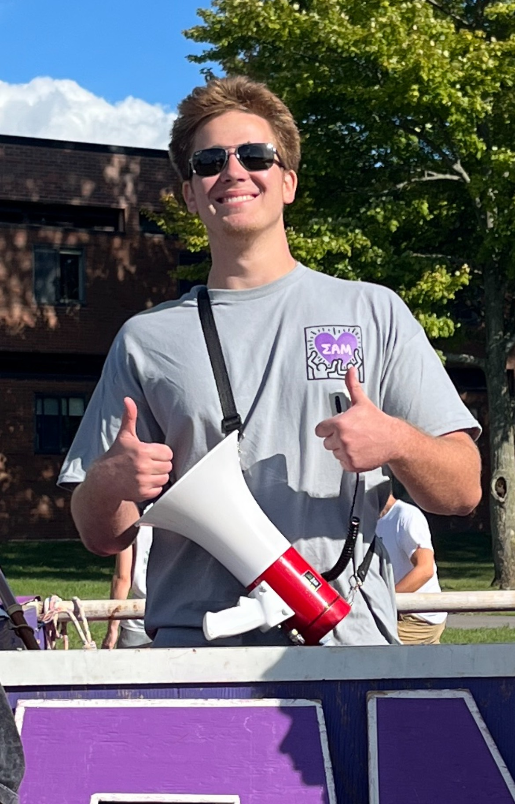

Leadership Team
Each member of Sigma Alpha Mu's leadership team plays a vital role in ensuring the chapter runs smoothly and effectively.
- Manhood
- Democracy
- Humanity
Beta Rho (BP) | Fall Rush 2023

Noah "Boston" Baumgaertel | Family #34
Silly little jewish SOIS Major with a minor in coin picking and controlling the media. Long Nose. Also Ginger, ew.
Hayden "Double" Baugh | Family #66
Second in command of the chapter following the rule of the prior. The Vice Prior manages all of the main internal aspects of the chapter such as the various chairs and positions.Beta Sigma (BΣ) | Spring Rush 2023

Erik "Danger" Callejas | Family #8
The Exchequer is in charge of the chapter's finances and ensures that we are on budget.
Liam "Hound" Schaefer | Family #66
The Recorder is in charge of keeping our meeting minutes, as well as reporting back to our HQ monthly.Beta Tau (BT) | Fall Rush 2023

Antonio "Stash" Caldaroni | Family #34
The Social Chair is in charge of setting up our general social events. This mostly includes setting up events with outside organizations.
Adam "Clueless" Woldan | Family #34
Third Year Student Majoring in Mechanical EngineeringHometown: Franklin Square, NY
Fun Fact: I have been hit by 4 cars.

Soren "Flats" Orcutt | Family #96
The Historian is responsible for maintaining the history of the chapter and running all chapter rituals such as Big/Little and Initiation.
Aidan "Goblin" Cavanaugh | Family #8
The Educator is in charge of our new member process. They teach the candidates about the Fraternity's history and oversee the Big/Little Brother pairings.
Ozias "Binky" Verminski | Family #96
The Risk Manager ensures that all fraternal matters are safe for all envolved.
Ethan "Two-Time" Carver | Family #8
The Athletic Chair is in charge of managing all of the orgs intramural teams and fantasy football
Austin "Romeo" Kunkel | Family #12
The IFC Delegate's job is to attend biweekly IFC meetings and represent our chapter. This chair relays any new information from IFC to the chapter.
Joshua "Ca$happ" Abdallah | Family #8
The Alumni Recorder's job is to build and improve our relationship with alumni, and keep a sense of brotherhood between us and those who have graduated.Beta Upsilon (BY) | Spring Rush 2024

Sam "Angel" Tambacas | Family #34
The Philanthropy Chair's role in the chapter is to plan and carry out events to spread awareness and support various causes by donating funds we raise from these events. The main organizations we support and donate to are The Judy Fund, The Make-A-Wish Foundation, and Rochester Regional Health.Beta Phi (BΦ) | Fall Rush 2024

Ari "Softie" Hollingsworth | Family #96
The Community Service Chair position is in charge of tracking and assigning community service hours, as well as planning some of our smaller community service events.
David "Rooftop" Lanuti | Family #8
The Public Relations Chair is responsible for running the chapter's social media accounts as well as maintaining robust relationships with other organizations on campus.
Jason "Dipper" Bradbury | Family #42
The Recruitment Chair's job is to lead our recruitment of new members, both during rush month and throughout the semester.
Kaden "Oyster" Boyle | Family #66
The Webmaster is in charge of ensuring the chapter website is up to date and managing the chapter's emails.
Kyle "Irish" Long | Family #34
The Sergeant at Arms is concerned with keeping order at meeting and serves as the chapter parliamentarian.
Ryan "Honey" Thompson | Family #8
The Scholarship chair is responsible for all academic matters in the fraternity. He enforces all grade policies and ensures that we are on-track with GPAs.
Pratyush "Temperance" Karthikeyan | Family #96
The mental health chair is responsible for giveing presentations on mental health and wellness as well as hosting events promoting mental health.Beta Chi (BX) | Spring Rush 2025

Ricky "Reina" Flores | Family #34
3rd Year Student Majoring in Electrical Engineering Technology | Minoring in Psychology
Gavin "Whiplash" Komoda | Family #8
The mental health chair is responsible for giveing presentations on mental health and wellness as well as hosting events promoting mental health.
Dominic "Cougar" Raifsnider | Family #34
The mental health chair is responsible for giveing presentations on mental health and wellness as well as hosting events promoting mental health.Beta Psi (BΨ) | Fall Rush 2025

Dakota "Cap'n" Baker | Family #96
The mental health chair is responsible for giveing presentations on mental health and wellness as well as hosting events promoting mental health.
Tyler "Spokesman" Friel | Family #34
The mental health chair is responsible for giveing presentations on mental health and wellness as well as hosting events promoting mental health.
Rex "Hot Dog" Gleason | Family #66
The mental health chair is responsible for giveing presentations on mental health and wellness as well as hosting events promoting mental health.
Jamison "Hightail" Sass | Family #8
The mental health chair is responsible for giveing presentations on mental health and wellness as well as hosting events promoting mental health.
Ryley "Belmo" Robinson | Family #8
The mental health chair is responsible for giveing presentations on mental health and wellness as well as hosting events promoting mental health.